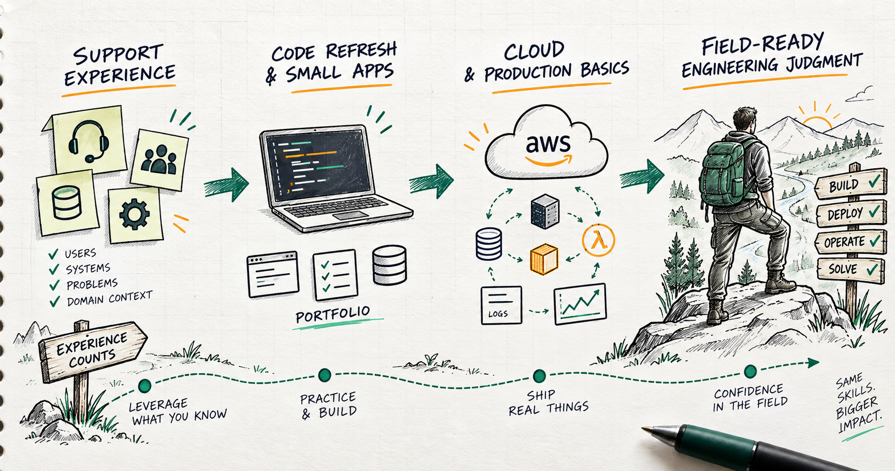

How to become a forward deployed engineer after years away from product code
If you have been supporting live products but feel rusty on product coding, you are not starting from zero. You are starting with field experience. Now the job is to turn that experience into build receipts.

Quick answer
If you have supported live products for years but have not written recent product code, the move is not to apologize for the gap. The move is to refresh one modern stack, build three production-shaped portfolio projects, deploy or document the deployment path, and use your support experience as proof that you understand real users, incidents, edge cases, and operational mess.
Forward deployed engineering rewards people who can turn ambiguity into working systems. Product code can be refreshed. Production judgment is harder to fake.
Your support experience counts
Six years supporting live products is not dead time. It is exposure to the place where software meets reality.
You have likely seen the same patterns a forward deployed engineer has to care about: confusing workflows, unclear ownership, missing logs, weird edge cases, frustrated users, fragile handoffs, urgent bugs, and product decisions that look simple until they touch a real customer environment.
That experience gives you a useful advantage: you probably understand how systems fail in the field better than someone who has only built clean tutorial apps.
The gap is not whether your experience matters. The gap is evidence that you can still build.
What forward deployed roles reward
Modern FDE roles are not only about writing isolated features. OpenAI describes FDE work as end-to-end deployment work: discovery, scoping, system design, build, production rollout, adoption, feedback, and reusable patterns. Palantir describes its FDSE role as engineers embedded with customers to understand hard problems, build solutions, and work across technical and non-technical teams.
That means your target skill stack is broader than "can code." You want to show that you can:
- Understand a messy workflow.
- Translate user pain into technical scope.
- Build a small useful slice.
- Think through identity, data, permissions, logs, deployment, and ownership.
- Communicate tradeoffs clearly.
- Leave behind documentation and operating instructions.
That is why support/product experience can become a strength if you pair it with fresh build receipts.
A 90-day rebuild plan
Do not try to relearn every framework at once. Pick one build lane and finish things.
Weeks 1-2: refresh one stack. Choose TypeScript or Python. Build a simple web app with a database, auth-shaped access, API routes, error handling, and a deployment plan.
Weeks 3-6: build project one from your support world. Turn a real support pattern into software: intake, triage, prioritization, status, routing, or response drafting.
Weeks 7-10: build project two with AI or automation. Add a constrained assistant that uses approved context, drafts recommendations, and requires human approval before any write action.
Weeks 11-12: polish and publish the story. Write the README, architecture notes, runbook, security assumptions, limitations, demo script, and what you would improve next.
The goal is not to look like you never stepped away from product code. The goal is to prove that you can rebuild the coding muscle while using the field judgment you already earned.
Build portfolio projects that look like real work
A weak portfolio says, "I followed a tutorial." A strong FDE portfolio says, "I understand a real workflow and can turn it into a working system."
Good project ideas from a support background:
- Support triage queue: intake form, categories, severity, owner, status, and escalation path.
- Customer-safe response assistant: approved knowledge base, draft response, required human review, and audit log.
- Incident pattern dashboard: group recurring issues by product area, source, severity, and time window.
- Release readiness checklist: feature launch checklist with approval gates, rollback notes, and owner assignments.
- Internal workflow assistant: answer only from approved docs, cite sources, and log unanswered questions.
Every project should have a problem statement, user persona, data model, system diagram, deployment notes, and a short demo. That turns the project from "code sample" into "field-ready thinking."
Learn AWS through deployment, not vocabulary
Since JWTechDev.com is AWS-heavy, I would make at least one portfolio project AWS-shaped.
You do not have to make it complicated. You do need to show that your local machine is not the final destination. AWS Well-Architected is useful here because it pushes you to think about secure, reliable, efficient, cost-aware systems instead of only features. IAM matters because real systems need authentication and authorization boundaries, not just code that runs.
For each project, write down:
- Where the app would run.
- Where the data would live.
- What identity or role the app would use.
- What the app can read and write.
- What gets logged.
- How you would monitor it.
- What happens when something fails.
- Who owns it after handoff.
This is the difference between "I can make an app" and "I can help ship a system."
Write runbooks because they prove maturity
Runbooks are underrated portfolio assets.
For each project, include a short operator guide:
- How to run it locally.
- How to deploy it.
- What configuration is required.
- What logs matter.
- What common failures look like.
- How to recover or roll back.
- What assumptions are still unsafe for production.
This is where your support background shines. You know the pain of systems that have no operating instructions. Make that your advantage.
How to tell the story
Do not say, "I have not coded in six years, so I am behind."
Say this:
"I have spent the last six years close to live products, users, issues, and operational reality. I am rebuilding my product coding muscle by shipping small production-shaped systems that turn real workflow problems into working software."
That is a much stronger story because it connects your past to the role you want.
Your next move is simple: pick one stack, build three workflow-based projects, make one AWS-shaped, and document each like a system someone else could operate.
Support experience counts. Now build the receipts.
Sources checked
Want the starter kit?
Grab the free JWTechDev.com starter kit if you want a practical way to connect cloud basics, AI workflows, and approval gates.
Get resources